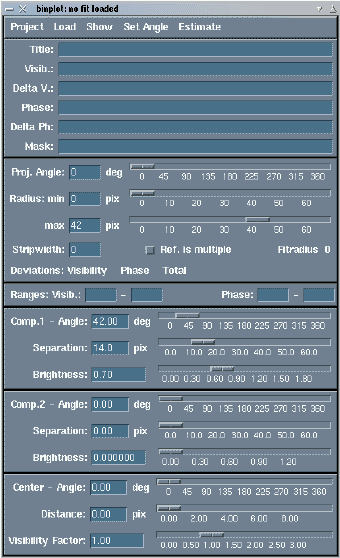
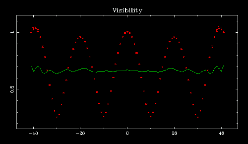
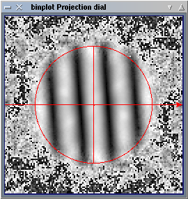
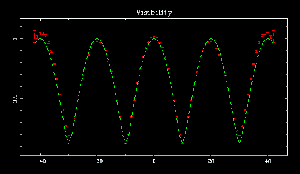
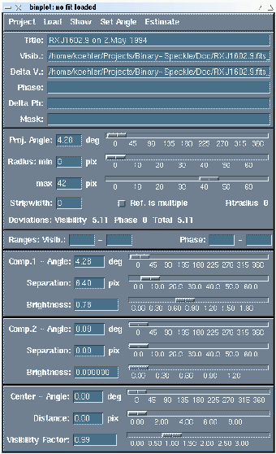
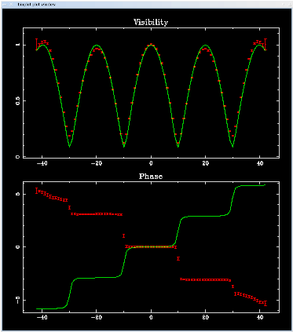
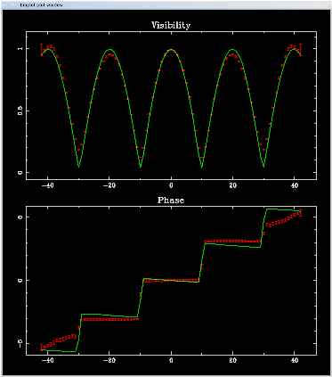
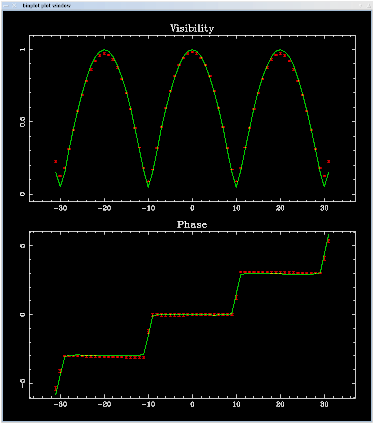
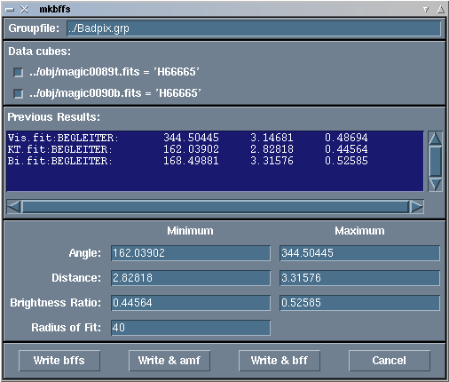

binplot
Currently, mcspeckle can't pass any filenames to binplot,
so it will come up with an empty plot window and its control window:

You should first load the visibility by selecting "Visibility" in the "Load" menu. If the delta file of the file you selected can be found, it will also be loaded. Furthermore, binplot tries to guess a reasonable title for the hardcopy you get in the end. This is based on the OBJECT and DATE keywords in the FITS-header of the file.
Here we use the star RXJ 1602.9-2022 as example (see Koehler et al. 2000). The data files are in the Doc subdirectory of the package. This star shows some typical problems of the fitting procedure, so we decided not to use H66665 here. The results of my fits to the H66665 data are included with the example, so you can try to do the fits and compare your results to mine. So, when you load RXJ1602.9.fits_tvis as visibility, you should see a 1-dimensional projection of the visibility in the plot-window:
The red points mark the data, the green line is the model, ignore it for the moment. This 1D projection is obtained from the 2D date by projecting the data onto one axis, i.e. averaging over the axis perpendicular to it. This is not a simple cut through the image, it really means adding all pixels in one direction and then dividing by the number of pixels. The projection axis doesn't have to be the x- or y-axis of the image. To see the binary better, we have to set the angle of this projection to the position angle of the binary. The easiest way to do this is by using the "Projection Dial", which can be opened with an item in the "Projects" menu:

This is the 2D visibility plus a circle and two lines. The circle marks the part of the image that is used to compute the 1D plot. Features smaller than the diffraction limit of the telescope cannot be reconstructed. The diffraction limit corresponds to a certain spatial frequency in Fourier space. For frequencies larger than this, our data does not contain any information about the object observed, but only noise. However, the radius where the signal-to-noise ratio becomes too bad depends not only on the diffraction limit of the telescope, but also on the atmospheric conditions during the observations. Therefore one has to inspect the data and set the maximum radius accordingly. There is also a minimum radius. However, this is not visible in the projection dial if it is zero. To change the radius, you can simply click on the circle and drag it with the mouse, the plot should change immediately (you have to click on the red line, not just somewhere inside the circle).
The shorter line is the direction in which the pixels are averaged. The long line with the arrow at one end is always perpendicular to it and essentially marks the X-axes of the 1D plot, with the arrow pointing in +X direction. The projection angle can be changed by clicking and dragging on the lines.
The characteristic stripe pattern of a binary is perpendicular to its position angle. If the shorter of the red lines is parallel to the stripes, the projection angle is equal to the position angle. You can also drag the projection angle around and watch the 1D plot. If the amplitude of the curve reaches its maximum, you are at the position angle of the binary.Now we try to find an initial model for the binary that can be used as starting point for the fitting programs. We already have a good guess for the position angle, you can copy this value to the angle of the first companion by selecting "Proj.->Comp.1" in the "Set Angle" menu. You can also use the entry for "Position Angle" in the "Estimate" menu, albeit this will probably give the same result.
To get initial separation and brightness, you can use the corresponding entry in the "Estimate" menu. In some cases, this gives good values, in many other cases, it is just wrong. (This is the reason why we still stick with the cumbersome fitting procedure and not use the algorithms behind the "Estimate" menu"). You can also use the entry fields or sliders for companion 1. Remember: The period of the wave corresponds to the separation, where shorter separations give shorter periods. The amplitude corresponds to the flux ratio of the binary, or the brightness of the companion, if the primary is normalized to one.Another important parameter is "Visibility Factor". The visibility is normalized so that it is 1.0 at spatial frequency 0.0. This means the brightness of the primary is 1.0 by definition. The other maxima of the visibility should also be 1.0. However, in real life this is not always the case, since this normalization is based on one single pixel and therefore very sensitive to noise. To compensate this, the data is multiplied by the visibility factor.
A good initial model for this example binary would look like this:
The settings in the control window are shown here:

Note that there are controls for a second companion, but its brightness is set to zero. They are used for triple stars.
Now we can start the fitting program. You can use the amf or the bff program. The latter stands for "brute force fit", since it simply computes many models on a grid around the starting point and uses the best fit as new starting point for a smaller grid. This is repeated until the grid is sufficienctly small. Of course, this needs a lot of CPU time. Trying to fit a triple star can easily take more than a week. The amoeba algorithm used in amf is much faster (it needs a few minutes for a triple star), therefore I strongly recommend using it.Both amf and bff can and should be started from the "File" menu. You are asked to give a filename for the bff-file, that is the input file for both amf and bff. The default is Vis.bff, because we are fitting to the visibility only for now. Then binplot will start an editor to let you edit the file. It will use the contents of the VISUAL environment variable, this should contain an editor that is able to open its own window.
The bff-file consists of comments (lines starting with #) and "keyword = value" pairs. The keywords should be self-explanatory. You will recognize the filenames of visibility and delta file, the title, the radius (min and max), and the parameters for the binary model. The latter contain two values. If you use bff, they give the range of values that will be scanned in the first pass. For amf, one point of the simplex will have the first values of all parameters as coordinates. The other points are obtained by using the second value of one parameter each time. Initially, both values will be the same, so you should change at least one of them.
It takes a bit of experience to decide which values to use, and the only advice I can give is this: If you are not sure that you picked a good starting value for a parameter, you should choose a larger difference so that a larger range is scanned during the fitting procedure. On the other hand, the values entered here should not be very important for the final result, they mainly determine how many iterations have to be computed to find it. A rule of thumb is to start with scan ranges of about 0.5 degrees in position angle, 0.1 pixels in separation, and 0.1 in flux ratio (brightness). Here are the relevant parts of my edited bff-file:# # /home/koehler/Projects/Binary-Speckle/Doc/Fits/Vis.bff created by binplot from Dec 5 2000 # visib = /home/koehler/Projects/Binary-Speckle/Doc/RXJ1602.9.fits_tvis dvisib = /home/koehler/Projects/Binary-Speckle/Doc/RXJ1602.9.fits_dtvis title = RXJ1602.9 on 2.May 1994 ce_ang = 0.000000 10.000000 ce_dist = 0.000000 10. angle1 = 4.280673 4. dist1 = 6.400000 6.5 brightn1= 0.781991 0.7 radius = 0 42 bff_out = *.bffo fit_out = *.fitThe last two lines give the names of the output files, where the * will be replaced by the name of the input file (without the .bff). The first file is in the same format as the input file, while the second is in the format of the fit-program that was used before binplot was invented.
If you exit the editor, binplot's control-window will be iconized and amf or bff started. When the fit-program is finished, binplot reads the .fit-file and adjusts its settings accordingly. Since our example binary is a very easy case, the result of the fit doesn't look much different than the input. In more difficult cases, the result will be different.
The next step is to load one of the phases, usually that computed using the Knox-Thompson-algorithm (it is in the file with extension "ktph"). Our example is quite typical - we picked the wrong position angle. Since the modulus of the fourier transformed image is symmetrical, we can't tell if the secondary is to the left or the right of the primary. However, the phase tells unambiguously that we got it wrong:

We just have to add 180 degress to the position angle, but since computers are there to do the computations, there is an entry in the "Set Angle" menu that does it for us.
The result looks good, but you can try to play with the position of the center to improve it. Because of the way the phase-reconstruction algorithms work, the center of light should be centered on the image, but this is based on three pixels for x and y. Like the normalization of the visibility, this is not always right. The "Center" entry in the "Estimate" menu fits a plane to the difference between the phase of the data and the model and computes the corresponding shift of the center. You should call it several times until it converges. (Since a phase of pi is the same as -pi, there is always an ambiguity when one computes difference of phases. Therefore the estimate works better if the differences are small (much smaller than pi), e.g. if one starts from a previous estimated position).
Now you can call amf or bff again. This time it will probably take more time to run, since it has to compute differences for visibility and phase. After a while, binplot will show the result:

This is far from being optimal. The reason is that the phase reconstruction had problems to get the second step right. The best way out in this case is to reduce the maximal radius to about 31 pixels to exclude the bad parts of the phase. Then start amf or bff again. The result looks like this:

This is about as good as one can expect. You can now create a hardcopy of the result with "Print" in the "File" menu.
To check if there are more companions, we use the maxbright program again. To do this, we first have to subtract the model of the first companion from the data. This is not the same as subtracting the model from the data, since maxbright expects to get data with the primary, so we have to subtract only the contribution of the secondary. It is done with "Save without Comp." in the "File" menu. It will ask for the names of all the files it is going to write.
Next you can repeat the fitting procedure with the phase constructed from the bispectrum. It is usually a good idea to start with the result of the fit to the visibility without phase (there is an item in the "File" menu to read a fit-file). This is especially important with our example binary, since the bispectrum-method was able to reconstruct the second step in the phase function, so we can use the larger fit radius. The fitting procedure should be straightforward.When saving the data without the companion, you have to decide if you want to overwrite the visibility based on the fit to the Knox-Thompson phase. I do this if the fit to the bispectrum-phase is better (which it usually is).
Now you can call maxbright using the corresponding item in the "File" menu. Binplot will give it the names of the data files without the companion and the radius of the fit. The results of maxbright for binaries (after the subtraction of a companion) are on average better than for unresolved stars. I think this is not real (why should the data of binaries be systematically better than that of unresolved stars?) but related to the fitting procedure. The fitting programs try to minimize the difference between model and data (which has errors), so the residuals after the fit will be smaller than if one subtracts a model with the exact parameters of the real binary.
To estimate the errors of the parameters of the binary, we make fits to the results of single data cubes. There is a program called mkbffs to make this easier. To use it, quit binplot and type (in the Fits subdirectory)
mkbffs ../Badpix.grp
Its window looks like this:

You can select the data cubes you want to use and the parameter ranges. It shows the results of all .fit files in the directory and picks the minimum and maximum of each parameter. If you picked the wrong position angle for the fit to the visibility, its range will span about 180 degrees. This is not very reasonable, so you should correct this by hand. The other ranges are usually usable.
If you click on "Write bffs", bff-files for all the datacubes are written. If you click on "Write & amf" or "Write & bff", the same bff-files are written, but amf or bff is started for each of them. After that, mkbffs will create a file with all the results and mean and error values. Finally, it starts your editor on this file (the environment variable VISUAL is used as the name of the editor). Here are my results of the example data of HIP66665:
H66665 on 21/06/00
==================
P.A. d K2/1
FitBi1.fit: 163.50284 3.10721 0.41807
FitBi2.fit: 165.16856 3.20910 0.50705
FitKT1.fit: 159.91901 3.13673 0.42308
FitKT2.fit: 179.70576 2.54439 0.48625
FitVi1.fit: 163.65426 3.16339 0.49076
FitVi2.fit: 165.79951 3.21005 0.44564
----------------------------------------
166.29166 3.06181 0.46181
+/- 2.80942 +/- 0.10478 +/- 0.01545
Bi.fit: 168.49881 3.31576 0.52585
KT.fit: 162.03902 2.82818 0.44564
Vis.fit: 344.50445 3.14681 0.48694
----------------------------------------
225.01409 3.09692 0.48614
+/- 59.77427 +/- 0.14295 +/- 0.02316
The 180 degree ambiguity of the visibility strikes again, we have to
calculate the mean position angle and its error ourselves.
Generally, we quote the mean value of Bi/KT/Vis.fit and the larger
of the error. So in this case, the final result would be:
Continue with the tutorial on maxbright.